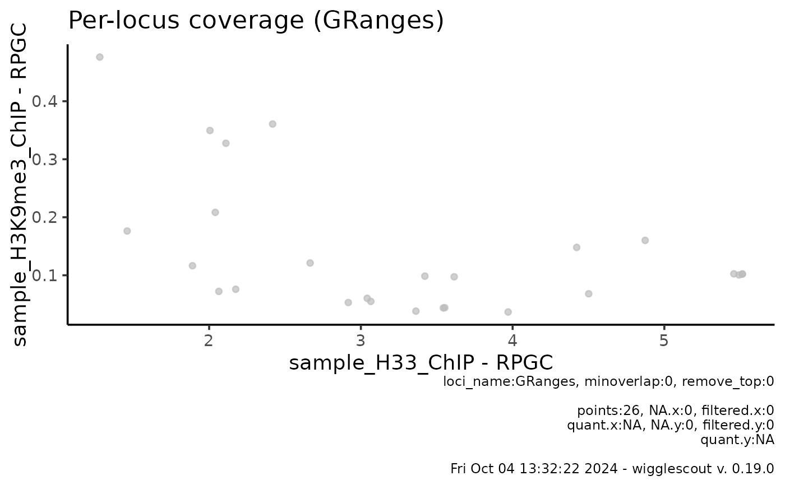

Plots a scatter plot from two given bigWig files, a locus object and a set of BED files as highlighted annotations. Loci are highlighted if there is at least minoverlap base pairs overlap with any loci in BED file.
Usage
plot_bw_loci_scatter(
x,
y,
loci,
bg_x = NULL,
bg_y = NULL,
norm_mode_x = "fc",
norm_mode_y = "fc",
highlight = NULL,
minoverlap = 0L,
highlight_label = NULL,
highlight_colors = NULL,
remove_top = 0,
verbose = TRUE,
default_na = NA_real_
)Arguments
- x
BigWig file corresponding to the x axis.
- y
BigWig file corresponding to the y axis.
- loci
Bed file or GRanges object to be plotted.
- bg_x
BigWig file to be used as x axis background (us. input).
- bg_y
BigWig file to be used as y axis background (us. input).
- norm_mode_x
Normalization mode for x axis.
- norm_mode_y
Normalization mode for y axis.
- highlight
List of bed files to use as highlight for subgroups.
- minoverlap
Minimum overlap required for a bin to be highlighted
- highlight_label
Labels for the highlight groups. If not provided, filenames are used.
- highlight_colors
Array of color values for the highlighting groups
- remove_top
Return range 0-(1-remove_top). By default returns the whole distribution (remove_top == 0).
- verbose
Verbose plot. Returns a plot with all relevant parameters in a caption.
- default_na
Default value for missing values
Details
If specifying minoverlap, you must take into account the bin_size parameter and the size of the loci you are providing as BED file.
Values in x and y axis can be normalized using background bigWig files (usually input files). By default, the value shown will be x / bg_x per bin. If norm_func_x or norm_func_y are provided, this can be changed to any given function, for instance, if norm_func_x = log2, values on the x axis will represent log2(x / bg_x) for each bin.
Values that are invalid (NaN, Inf, -Inf) in doing such normalization will be ignored and shown as warnings, as this is ggplot default behavior.
Examples
# Get the raw files
bw <- system.file("extdata", "sample_H33_ChIP.bw", package="wigglescout")
bw2 <- system.file("extdata", "sample_H3K9me3_ChIP.bw",
package="wigglescout")
bed <- system.file("extdata", "sample_genes_mm9.bed", package="wigglescout")
plot_bw_loci_scatter(bw, bw2, loci = bed)
# It is also possible to plot from a GRanges object
gr <- rtracklayer::import(bed)
plot_bw_loci_scatter(bw, bw2, loci = gr)
